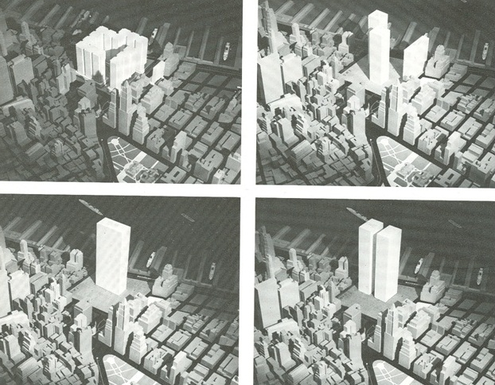
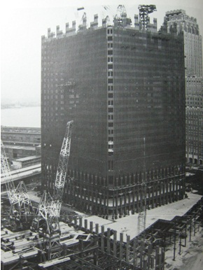
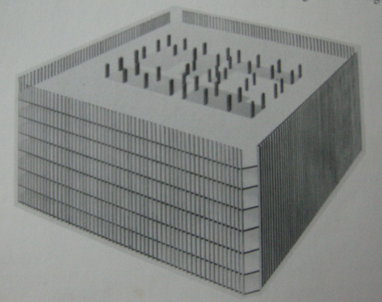
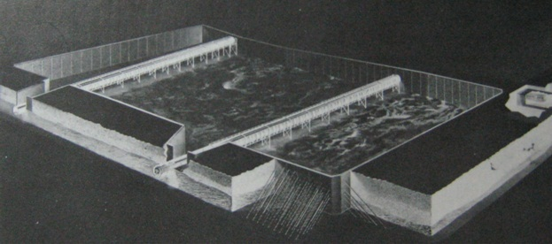
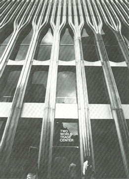

Video Sources
Building the World Trade Center
A short documentary on the construction of the World Trade Center
Structural Building Details
Skyscrapers are often built for fulfill the social and economical needs of the population. It's the need to "bring together people and facilities for transacting business." (Ruchelman 1). In the designing of the World Trade Center, Tozolli wanted it to be "one focused, centralized, and integrated facility... a city within a city" (Gillespire 47).
A new architecture firm was chosen to undertake the designing of this structure. This the list they came up with in order of report: 1) Carson, Lundin & Shaw; 2) Philip Johnson; 3) The architects Collective (T.A.C.), headed by Walter Gropius; 4) Kahn & Jacobs; 5) Minoru Yamasaki Associates; 6) Welton Becket associates; and 7) Kell and Gruzen. Through elimination and comparisons, they chose Minoru Yamasaki.
The building designed were to be symbolic of its meaning: "the working together in trade of the Nations of the World" (Gillespire 27) and therefore needed to stand for "humanity and democratic purposes" (Gillespire 27). The World Trade Center was to be the first thing one sees at the ocean entrance to New York, so the main idea of the design was to create a "significant and expressive form...[which] from far away the silhouette...[must be able to be] remembered as the unequivocal image of the World Trade Center." (Robins 26).
Initially Yamasaki went through a large series of models. One was a single building, and another were composed of ten smaller buildings. He always returned to the same idea of two towers surrounded by a plaza. In Yamasaki's view, he wanted spectators to be able to "stand back.. and contemplate the towers as [a] giant metal sculpture" (Robins, 38). It should have excitement of its own, and be "inviting, friendly, and humane" (Robins 27). (Figure 1)
Figure 1: Four of Yamasaki's Original Models, Showing the Evolution of the World Trade Center Design. The Beginning of the Twin Tower Concept can be seen at the lower right. (Robins 34)
Prior to World War II, the skyscrapers had specific shapes with very defined, tapering silhouettes. After the war, the slab-high quality or color of the materials, format upon the basic shapes- became important. To differentiate between other square or rectangular buildings, the twin buildings became the unique design.
The Empire State building, which was one of the tallest buildings before the WTC, can be compared in terms of topothesia with the Twin Towers. The former's slender silhouette and its physical central placement in Manhattan made it a great symbol. Furthermore, its five-story base blends in at the bottom while its top goes well with the other tall buildings. Comparatively, the twin towers with their height and aesthetically appealing effect stand out as the more compelling symbol. Reflection of sunlight, light from the river, and light ricocheted between the body of the towers achieved the sculptural effect Yamasaki strived for. The play of light highlighted and dramatized the aesthetical appearance for observers moving from any direction toward or away the tower.
The structure was built with 600,000 square feet of glass; 200,000 tons of structural steel; 20 mile of zinc ribbon to line foundation walls, and 6 acres of marble.
In creating the main support system of the towers, the building's height was the root of the challenge. As buildings are built taller, structural components must keep it straight under its material weight, while having the aptitude to brace wind loads. They achieved a successful result by utilizing the concept of load-bearing masonry walls that was quite common in the world's oldest forms of construction. This wall was combined with reinforced structural steel, creating an empty box with floor trusses reaching to the central core. The wind loads were channelled down the walls to the foundations. (Figure 2)
Figure 2: Construction of the Two Tower s in Progress (Robins 42) 
Figure 3: A Tower Cross-Section Showing the interior core Columns and the Exterior Load-Bearing Walls. (Robins 47)
Since the site was upon land that used to be part of the river, creating an impermeable foundation was a difficult task. They solved this through an adaptation of the Milan's subway excavation. They excavated the twelve block site, and poured in a slurry of bentonite and water as rock and debris was simultaneously taken out. Once they dug into bedrock, a reinforced steel cage is descended into the pit through the slurry. Cement was then poured in, supplanting the slurry, creating the reinforced concrete wall surrounding the site and keeping out the water. They named it "the bathtub." (Figure 4)
Figure 4: Excavation Site of the Twin Towers. The Concrete Perimeter Walls, created by the Slurry-Trench System, formed what became known as "the Bathtub." (Robins 46)
Yamasaki drew many inspirations from gothic architecture. He designed the windows so that from far away they would appear as if "sheathed in metal" (Robins 35). This effect was achieved through using a higher column width to glass width ratio (22 inches of glass between 18 inch-wide columns) compared with the usual wide panes of glass. They were in long vertical windows that have gothic arches at the top. Yamasaki decided to use stainless steel since standard aluminum was very "cold-looking" (Robins 36). In the end, a materials company came up with a new alloy of aluminum to create the silver alloy used for the twin towers. (Figure 5)
Figure 5: Detail of the Base of the World Trade Center, Showing Treatment of Glass and Columns (Robins 36)
In keeping with the spatial evenness of the appearance, building necessities were hidden strategically within the building. A 40,000 ton central refrigeration plant was design for the towers. Since Yamasaki didn't want optically obstructing pieces to exist, the plant's pump was built inside to take water in from the nearby river. The cool water acted as air-conditioning enough to cool 15,000 homes.
Despite the importance of the twin towers, the surrounding plaza also be important to the architect's ideals. The plaza's main focus was to attract attention to the twin towers. They were physically detached so as to let the spectators to have the chance to walk close to every side of the two towers and look up to the top. The plaza was darkly coloured compared to the tower's silvery allow creating a "changing quality as one approaches across the plaza" of the overall building (Robins 38).
The building process of the World Trade Center was a creative progression which employed the structural aspects-height, visual effect, façade - to insinuate its symbolic importance, establishing its position as the center of economic trade.